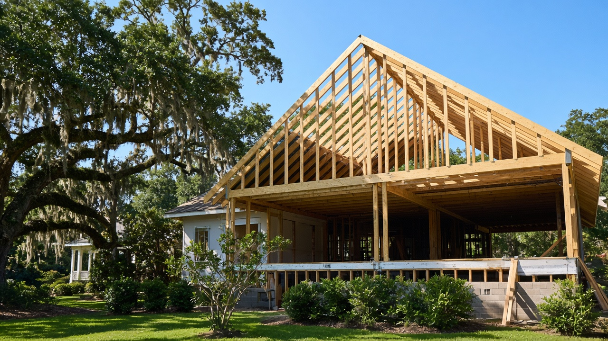

Sample photoWe are the ultimate handyman business. We do free estimates and expect no less than customer satisfaction!
“I was very, very impressed.”
J. E., Nextdoor
3019 Pamplico Hwy
Florence, SC
(843) 331-2376
byrdcleaning3019@gmail.com
Directions →